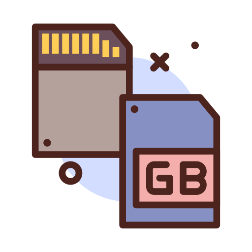
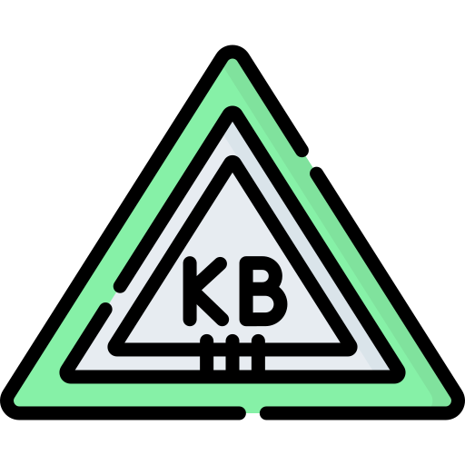

Glosario de terminos
A
- Algoritmo (n. masc.)
- Un algoritmo es cualquier procedimiento computacional bien definido que parte de un estado inicial y un valor o
un conjunto de valores de entrada, a los cuales se les aplica una secuencia de pasos computacionales finitos,
produciendo una salida o solución.

- Aplicación (n. fem.)
- Programa que realiza una serie de funciones y con el cual trabajamos en el ordenador.

B
- Base de datos (n. fem.)
- Sistema de almacenamiento de datos muy flexible que permite organizar la información de forma muy eficiente.

- Bit (n. masc.)
- Unidad básica de información representada por ceros y unos que se van sucediendo para conformar los distintos
significados.

C
- Comando (n. masc.)
-
Orden que se da al ordenador para ejecutar una función concreta o un programa.
- CPU (Unidad Central de Proceso) (n. masc.)
-
Carcasa donde van montados los principales componentes del ordenador. Puede ser de sobremesa, minitorre, semitorre
y torre.

D
- DNS (n. masc.)
-
Sistema de Nombres por Dominio utilizado en Internet y basado en una estructura jerárquica y mediante el cual
comunicamos con otro ordenador que puede encontrarse en otra parte del mundo.

- Dominio (n. masc.)
-
Grupo de equipos conectados en red que comparten información y recursos.
E
- e-mail (n. masc.)
-
Nombre inglés que designa el correo electrónico.

- Enlace (n. masc.)
-
Conexión de un documento de Internet con otro que figura resaltado de manera especial, también llamado
Hipervínculo o Hiperenlace.

F
- Firewall(n. masc.)
-
Dispositivos de seguridad a entradas no autorizadas.
- Freeware (n. masc.)
-
De libre distribución para el usuario y no utilizable con fines comerciales.
G
- Gateway(n. masc.)
-
Dispositivo que permite conectar entre sí dos redes normalmente de distinto protocolo o bien un servidor a una
red.
- Gigabyte (GB) (n. masc.)
-
Medida de 1.000 Mb (unos 1.000 millones de caracteres).

H
- HTML (Lenguaje de Marcas de Hipertexto)(n. masc.)
-
Lenguaje utilizado para crear páginas Web.

- HTTP (n. masc.)
-
Protocolo de Transferencia de Hipertexto o entorno gráfico de las páginas Web.

I
- Internet(n. masc.)
-
Red de redes mundial. Telaraña o entramado mundial. También llamada World Wide Web (WWW), conjunto de redes que
permiten la comunicación de millones de usuarios de todo el mundo.

- IP (n. fem.)
-
Dirección numérica y única de cada ordenador en Internet.

J
- Java(n. masc.)
-
Lenguaje de programación creado por Sun Microsystem para proporcionar más velocidad y facilidad de uso a Internet,
es independiente de la plataforma utilizada y está disponible para cualquier navegador de la WWW que admita este
lenguaje.

- JPEG (Joined Graphics Expert Group) (n. masc.)
-
Es el formato de fichero gráfico más utilizado y difundido en Internet, ya que es un formato que alcanza un gran
nivel
de compresión (reduce las imágenes a la décima parte o más), pero a costa de una enorme pérdida de calidad al
utilizar
un método de compresión destructiva que estropea mucho los detalles, por lo que si modificamos el fichero dos o
tres
veces queda inservible.

K
- Kernel(n. masc.)
-
Núcleo básico del sistema operativo, a partir del cual se establecen las distintas capas para su integración con
el
hardware, para la entrada y salida de datos, etc.

- Kilobyte (Kb) (n. masc.)
-
Medida que equivale a 1.000 bytes, aproximadamente mil caracteres.

L
- LAN (Red de Area Local)(n. fem.)
-
Grupo de equipos conectados en la misma ubicación.

- Link (n. masc.)
-
Cada uno de los enlaces de un módulo con las librerías que utiliza. En Internet, conexión de un documento con otro
mediante un clic sobre un texto marcado o un icono o imagen.
M
- Megabyte (Mb)(n. masc.)
-
Medida que equivale a 1.000 Kb, aproximadamente un millón de caracteres.

- Multimedia (n. masc.)
-
Cualquier combinación de texto, imágenes, sonido y vídeo.